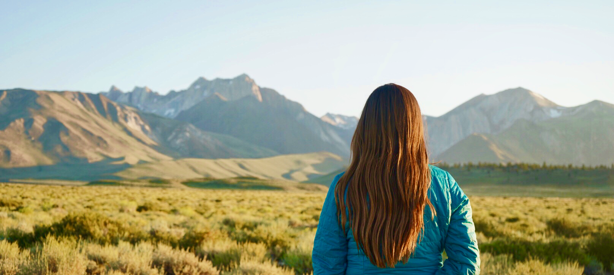

If Chloe had all the time in the world, and all the money in the world, she would stop at nothing to live the granola life. To be outside 24/7, constantly on the move, always exploring. She would live out of a van and travel from National Park to national Park, looking for places to rock climb. She would truly be one with nature.
But why? What's the fascination?
Being a granola girl means embracing a lifestyle deeply rooted in the beauty and tranquility of nature. This fascination stems from a profound appreciation for the outdoors, where each day presents an opportunity to connect with the earth in a meaningful way. From early morning hikes that reveal stunning sunrises to evenings spent under a canopy of stars, the granola girl thrives on the simplicity and purity of natural settings. The scent of pine, the sound of flowing rivers, and the sight of majestic mountains become her daily companions, offering a sense of peace and fulfillment that modern urban life often lacks. This way of life encourages sustainable living, mindfulness, and a deep respect for the environment, fostering a harmonious relationship between the individual and the natural world.

Where would she go?
Some Bucket List Items:
Places to Hike:
Mt. Shasta
Mt. Whitney
Mt. Lassen
Mt. Rainer
Half Dome Yosemite
Kilimanjaro
Everest Base Camp
Places to Climb:
Yosemite
Boulders at Alabama Hills
Rock Canyon
Moab
Red Rock
Places to Visit in the United States
Inyo National Forest
Oregon
Colorado
Montana
Alaska
Places to Visit in the World
Denmark. Iceland, Greenland, Sweden, Norway in one trip
Africa
Dubai
Himalayas
Jerusalem
New Zealand
Things I Want to Do:
swim in the middle of the ocean, with no land in sight around me